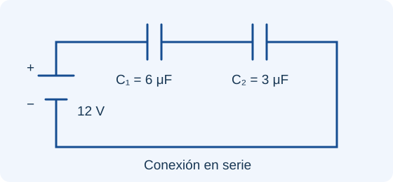
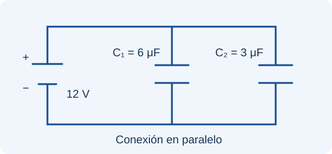
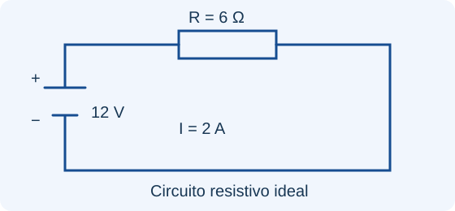

Trabaja en unidades SI: 1 μC = 10⁻⁶ C · 1 nC = 10⁻⁹ C · 1 μF = 10⁻⁶ F · 1 cm² = 10⁻⁴ m².
Comprender
Conceptos por módulos
Elige un módulo y después el tema que deseas estudiar. Los temas que se repiten en distintas semanas comparten su explicación.
Consultar y conectar
Formulario interactivo
Haz clic en una fórmula para abrir el módulo y el tema donde se utiliza. Cada ficha explica sus símbolos, unidades y condiciones de aplicación.
Una flecha indica un vector; Δ indica un cambio; Σ indica una suma. Los ángulos de la calculadora se introducen en grados. En cálculos con integrales, usa una convención angular coherente.
Aplicar
Ejemplos y circuitos
Lee el problema e intenta resolverlo antes de desplegar el procedimiento. Los diagramas muestran conexiones ideales.
EJERCICIO 01 · COULOMB
Fuerza entre dos cargas
Dos cargas q₁ = +2 μC y q₂ = −3 μC están separadas 0.30 m en el vacío. ¿Cuál es la fuerza eléctrica?
Ver procedimiento y resultado
q₁ = 2 × 10⁻⁶ C; q₂ = −3 × 10⁻⁶ C.
F = k |q₁q₂| / r².
F = (8.99 × 10⁹)(6 × 10⁻¹²) / (0.30)².
F ≈ 0.599 N · Fuerza de atracción.
EJERCICIO 02 · FLUJO
Campo sobre una superficie
Un campo uniforme E = 200 N/C atraviesa una superficie plana de 0.50 m². El campo forma 60° con la normal. Calcula el flujo.
Ver procedimiento y resultado
ΦE = EA cos θ.
ΦE = (200)(0.50) cos 60°.
ΦE = (200)(0.50)(0.50).
ΦE = 50 N·m²/C.
EJERCICIO 03 · POTENCIAL
Potencial de una carga
Calcula el potencial a 0.20 m de una carga Q = +4 nC en el vacío. Toma el potencial cero en el infinito.
Ver procedimiento y resultado
Q = 4 × 10⁻⁹ C.
V = kQ/r.
V = (8.99 × 10⁹)(4 × 10⁻⁹)/0.20.
V = +179.8 V.
EJERCICIO 04 · CAPACITANCIA
Serie frente a paralelo


Dos capacitores de 6 μF y 3 μF, inicialmente descargados, se conectan a una fuente de 12 V. Compara ambas conexiones.
Ver procedimiento y resultado
En serie: Ceq = (6 × 3)/(6 + 3) = 2 μF.
Q = CeqV = (2 μF)(12 V) = 24 μC en cada capacitor. Sus voltajes son 24/6 = 4 V y 24/3 = 8 V.
En paralelo: Ceq = 6 + 3 = 9 μF.
Cada capacitor tiene 12 V. Q₁ = 6 × 12 = 72 μC; Q₂ = 3 × 12 = 36 μC.
Serie: 2 μF. Paralelo: 9 μF. Carga total suministrada: 24 μC y 108 μC, respectivamente.
EJERCICIO 05 · CORRIENTE
Un circuito con resistencia

Una fuente ideal de 12 V alimenta una resistencia de 6 Ω. Determina corriente y potencia.
Ver procedimiento y resultado
I = ΔV/R = 12/6 = 2 A.
P = IΔV = 2 × 12 = 24 W.
Corriente: 2 A. Potencia disipada: 24 W.
EJERCICIO 06 · MAGNETISMO
Una carga en movimiento
q = +2 μC, v = 3 × 10⁴ m/s y B = 0.20 T. La velocidad es perpendicular al campo.
Ver procedimiento y resultado
F = |q|vB sin 90°.
F = (2 × 10⁻⁶)(3 × 10⁴)(0.20)(1).
F = 0.012 N, perpendicular a v⃗ y B⃗.
EJERCICIO 07 · FLUJO MAGNÉTICO
Un campo que atraviesa una espira
B = 0.50 T, A = 0.020 m² y θ = 60° entre campo y normal.
Ver procedimiento y resultado
ΦB = BA cos θ = (0.50)(0.020)(0.50).
ΦB = 0.005 Wb.
Experimentar
Herramientas gratuitas
Recursos externos para observar los fenómenos. Los enlaces abren una pestaña nueva y necesitan conexión a internet.
PhET · Simulación web gratuita
Ley de Coulomb
Modifica las cargas y su separación para observar la fuerza eléctrica.
Prueba: duplica la distancia sin cambiar las cargas. ¿Qué pasa con la fuerza?
Selecciona una operación, introduce los datos y consulta la sustitución numérica. Funciona en tu navegador, sin enviar los datos a un servidor.
El proyecto
Sobre nosotros
Aprender, relacionar y comprobar.
Este proyecto académico de Física II reúne conceptos de electricidad y magnetismo, un formulario enlazado, ejemplos resueltos, simulaciones y una calculadora desarrollada para este sitio.
Su objetivo es apoyar el estudio: identificar los datos, elegir el modelo, trabajar con unidades coherentes e interpretar cada resultado.
Institución: Universidad Mariano Gálvez de Guatemala.